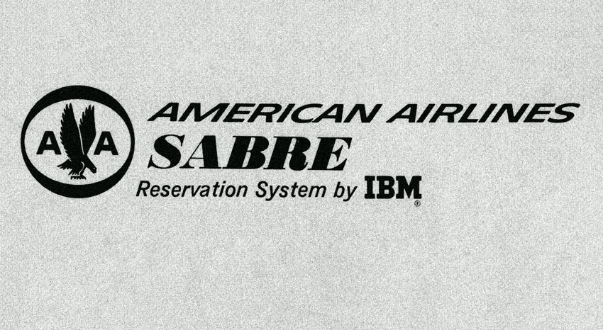
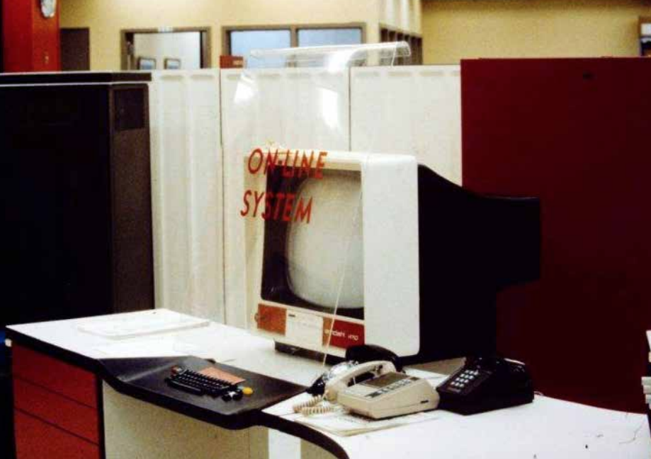

October 2, 2020
By M.C. Madrigal
Recorded on September 24, 2020 at 5:43PM

Logo for Americans Airlines Sabre Reservation System by IBM

Sabre computer for Americans Airlines

Screeshot of Akemi's "Day Photo" app
on the internet with akemi: discussing my mother’s memories during the decades of computer innovation and the dawn of the internet revolution
Akemi Madrigal is my mother. She is also an early adopter of smart home and quantified self technology, manages three personal Instagram accounts, and fastidiously records her life using several applications on her iPhone. In spite of being a digital “immigrant” (a term used by John Perry Barlow to describe those who are not native to cyberspace), Akemi has learned to organize her life on the internet in far more sophisticated ways than I have, her digital “native” daughter. Curious about her internet and computer history, I spent 41 minutes and 30 seconds on September 24 with Akemi via Zoom, asking questions about her memories during the decades of computer innovation and the dawn of the internet revolution.
Relocating to Los Angeles from Tokyo in the 1980s after meeting my American father, Akemi worked at a Japanese travel agency for Mitsubishi for her first job in the United States. Using IBM’s Sabre (Semi-Automatic Business Research Environment) central reservation system for work was her first memory of using a computer and the internet.
According to IBM
, Sabre was the precursor for the entire universe of electronic commerce that exploded in the mid-1990s. She recalls having to memorize countless airport codes and the tedious nature of having to print ticket booklets and hand-deliver them to Japanese clients.
She also shared her experiences of the technologies that helped her stay in touch with her friends and family while she was living abroad in the 1990s and early 2000s. In one recollection, she expressed shock when she came to the United States and realized that video calling technology had yet to be introduced to the American public, which was something she had been accustomed to in Japan. I also asked her about her memories and concerns as a parent raising three children who had access to the boundaryless World Wide Web at home, on our phones, and at school.
The second half of our conversation transitioned into talking about this era of internet innovation. My parents just bought a new house equipped with all the common smart home technologies available like the Google home assistant, a Ring doorbell, and the Nest learning Thermostat. Akemi described living within the internet of things like moving through an invisible web. I am fascinated by how quickly and openly my parents have adopted this next wave of internet technology, while I drag my feet resisting to adopt anything that tracks the banalities of my daily life. I guess the tables have turned, Akemi is now the (internet of things) native, and I, the immigrant.
edited transcript
M.C. Madrigal: Hi Mama, I have some questions prepared. Are you ready to start?
Akemi Madrigal: Really? Yes! (in Japanese)
What do you remember about the internet or the personal computer?
I don’t remember much about the internet in particular. Do you remember when you were on that travel soccer team? At that time they didn’t give us any handouts about organizing or transportation, everything was communicated by email, and you had to reply back to the email...I also remember looking up English words...and, your dad said we had a computer, but not an individual one, he had to share with more people in his company department or on the floor. That was in the 1990s, so we had a computer in the house when you were a kid.
Did you ever go on it?
No never. It was a “I don't know what to do with this” kind of situation. Oh, wait a minute. I was also using a computer when I was working at the travel agency, when I lived in Los Angeles, that was 1989?
Were you connected to the world wide web?
I wasn’t connected to the whole internet. It was an American Airlines special computer called Sabre. It was only for American Airline flights, you know, those types of systems. No other websites.
How long did you work there for?
When your dad was a student at UCLA, and we had a little baby Lillian, and we were super poor, so I had to work. So I got a job at a Japanese travel agency. You know Mitsubishi has a travel agency, and I was working at Mitsubishi in Los Angeles.
So, you were using the computer and the internet to help Japanese customers book trips?
All the ladies, or men, at the reservation center get all arrangements for the airplanes, and they send the information to our office, and then I would explain to the customers this airplane goes here or there, and you have to be there at this or that time. I was the sales representative and also I had to deliver all the tickets.
Oh you would physically hand it over?
Ya, there was no e-ticket. You had to print it in your office, special American Airplanes print - it's a really official looking airline ticket. Then check the information, then deliver it. At that time there was a bubble. All the Japanese companies were super rich and all the Japanese people were in LA and they had offices here. I was working for Mitsubishi, but there were so many other Japanese companies in that time.
In the 1990s did you use the internet?
No, I was busy raising my kids. I didn't have any time to do anything else. I didn't touch anything. Not so many people had the internet, just office people.
Do you remember when us kids started to use the internet if you had any fears, or you were scared that we were going to get into something bad?
Well, first you guys were just playing games and I wasn’t scared. But then you started downloading music. Illegally downloading music. And we asked, is this legal? And you guys said, “uh, everyones doing it!” It was a little too tricky for me because I didn’t know anything about it. And we were way behind you guys because we didn’t know anything about it. So we can’t trust you, but we trust you guys...that kind of situation.
Haha that’s funny. So you were never scared we would get into bad things on the internet.
No, I was never scared because I trusted you guys that you knew what was bad and good, and that you know what you shouldn’t do. I totally trusted in you guys.
How did you communicate with your family in Japan when you moved to the US before the internet?
My parents didn't have a computer, they never owned a computer so I never communicated with them by email, so just by telephone. And in Japan, they had a telephone you could communicate with face-to-face.
Oh they had a video phone system?
Ya they had a video system on the cellphone. It was like FaceTime, but it was pretty much the same thing. You just turned on the video talk.
Oh that was pre-FaceTime.
The technology was really early. When we came to the US we didn’t have that technology. When I came to the US, I was like “WHAT! They don’t have that here?!”
Can you tell me more about the other apps that you use?
I use a diary app. I used to use a food app. I used to have a daily meal application to check your weight and diet.
I know you have always kept physical diaries. But with these diaries online, do you go back to entries to see what you posted in the past?
Ya, every day. It shows last year you wrote this, two years ago you wrote that. And I read those.
Wow, that must be so insightful. Do you learn about yourself? What do you get out of visiting old posts?
It’s not what I’m thinking. It’s a journal of what I did, where did I go, what did I eat. It’s just a record. Don’t you want to keep your records? No?
Um ya, I guess it would be nice to have records.
Why do people keep diaries?
To help oneself? I like to write quite often to myself in a diary or journal. But I rarely go back. Once I write something, I never re-read it.
I don’t know if I’m learning about myself or anything but sometimes I feel like I should keep on doing it because I was doing it two years ago.
When you die [nervous laughter] do you think that all your information (diary entries, instagram posts, whatever else you log on your phone) do you want all of it to just disappear? Or do you want my grandchildren to see all your information? To see who you were?
That would be cool. Wouldn't you want to see it 100 years later? When my mom was 60 something years old, she was doing this and seeing that. It’s kind of interesting isn't it? And if it disappeared, I don’t care.
You wouldn’t care either if it just disappears? I think that I wouldn't want anyone to read anything that I wrote. I would want my information just completely burnt away when I die.
I don't mind. Because I don’t write any special secrets or anything. I just keep records. But sometimes I put a lot of my thought or feeling but it's not significant. It’s all simple things.
I’m glad you are giving me permission to see all your records. I have this recorded as proof.
Before I die I have to give you all my passcodes. These days everything is face recognition, so I have to tell you the passcodes and numbers.
You have different connections to the internet beyond your phone and watch. Do you feel like you’re always surrounded by the internet? From your car and in your home?
I always feel like I’m in a web of wifi.
Is it helpful?
Sometimes it’s scary. You know those informations that they’re sucking up from me. But it’s not bad for me. It’s not too scary for me. All the informations: What do I like, what am I doing, what I am listening to, my families and friends information, what network I'm in. Everything is on the net, in the clouds. Everyone knows that. Sometimes I’m scared they have all the information. The cameras are everywhere.
It’s scary, but not scary enough for you to want to opt out?
I try to think of it in another way, they are always watching me so it’s some sort of protection.